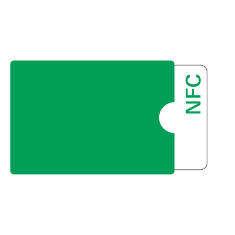
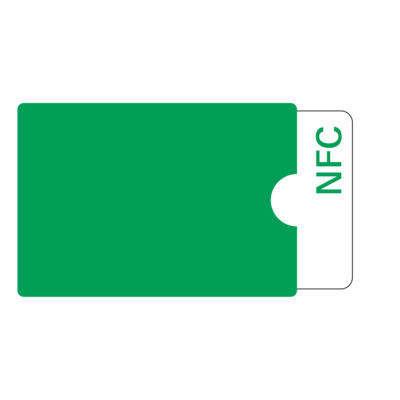

Kontaktlose Karten
Kontaktlose Funktechnologien werden in vielen Anwendungen eingesetzt. Eine dieser Technologien ist NFC (Near Field Communication).
Mit dem elektronischen Personalausweis und Reisepass können Sie sich im Internet ausweisen. Bei NFC-Schließsystemen können Sie Türen mit einer Schlüsselkarte öffnen. Mit vielen EC- und Kreditkarten kann man mittlerweile in Geschäften kontaktlos bezahlen.
Probieren Sie es aus:
Halten Sie die NFC-Schlüsselkarte an das Schloss auf dem Lesegerät, um die Tür zu öffnen. Finden Sie so heraus, welche Sicherheitsprobleme diese Technik haben kann.
Sicherheit von kontaktloser Kommunikation
Die Sicherheit von NFC-Systemen hängt davon ab, wie sie die Identität der Karte prüfen.
Sichere Systeme benutzen Kryptographie, um sicherzustellen, dass die Karte berechtigt ist, die Tür zu öffnen.
Leider bauen manche Hersteller unsichere Systeme, die sich leicht überlisten lassen.
Probieren Sie es aus:
Kopieren Sie die NFC-Schlüsselkarte, indem Sie sie an die Rückseite des Smartphones halten. Achten Sie dabei auf den Bildschirm des Smartphones.
Berühren Sie anschließend mit der Rückseite des Smartphones das Schloss auf dem Lesegerät und sehen Sie, was passiert.
Was ist gerade passiert?
Dieses Schließsystem ist unsicher, denn es prüft nur ein einziges Sicherheitsmerkmal: die Seriennummer der Schlüsselkarte. Jede NFC-Karte besitzt zwar eine einzigartige Seriennummer, diese kann aber leicht ausgelesen und kopiert werden.
Damit haben Sie das Schließsystem überlistet. Die Tür konnte mit der kopierten Information auf dem Smartphone geöffnet werden, statt mit der zugehörigen Schlüsselkarte. Ein Dieb könnte zum Beispiel im Gedränge Ihre NFC-Schlüsselkarte aus dem Geldbeutel in der Hosentasche auslesen und damit Ihr Büro aufschließen.
Wie können Sie sich schützen?
Halten Sie die NFC-Schlüsselkarte noch einmal an das Schloss auf dem Lesegerät.
Ist das nicht gefährlich?
In den falschen Händen könnte unser System auch von Kriminellen eingesetzt werden. Gleichzeitig können wir damit Sicherheitsprobleme in Systemen finden, bevor es andere tun. Dadurch tragen wir zur Verbesserung der Sicherheit dieser Systeme bei. Es handelt sich also um eine dual use-Technologie, die sowohl helfen als auch schaden kann - dies ist in der IT-Sicherheitsforschung oft der Fall.


 
